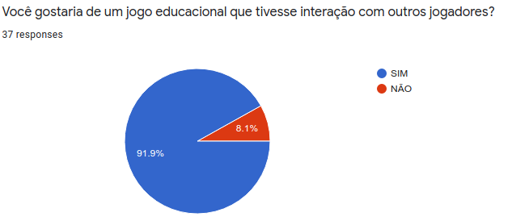

Perfil do Usuário
| Data | Versão | Descrição | Autor(es) |
|---|---|---|---|
| 08/09/2020 | 0.0 | Criação do documento | Equipe de GDD |
| 10/09/2020 | 0.1 | Elaboração e liberação do questionário | Equipe de GDD |
| 14/09/2020 | 0.2 | Descrição da metodologia | Iolane |
| 15/09/2020 | 0.3 | Coleta dos resultados | Iolane |
| 05/10/2020 | 0.4 | Adição da tabela de questões usadas no questionário | Iolane |
| 01/12/2020 | 0.5 | Revisão do documento | Stéfane Souza |
Metodologia
Uma técnica utilizada para compreender melhor o nosso público alvo foi a aplicação de questionário.
O questionário, segundo Gil (1999, p.128), é uma técnica de investigação quantitativa que tem como objetivo de conhecer as opiniões, crenças, sentimentos, interesses, expectativas, situações vivenciadas. O questionário é uma técnica que serve para coletar as informações da realidade.
Segundo BARBOSA e SILVA (2010, p.134), os dados coletados sobre o usuário são relacionados a sua relação com tecnologia, seu conhecimento do domínio do produto e das tarefas que deverá realizar utilizando o produto.
Ao elaborarmos o questionário, o dividimos em três seções. Na primeira seção pedimos a autorização do uso dos dados na nossa pesquisa, e coletamos dados pessoas como: idade; faixa etária; escolaridade e gênero. Com o objetivo de conhecermos nosso público alvo. Na segunda seção coletamos dados relacionados a práticas de estudo e interesse em prototipação. Na terceira seção coletados dados relacionados a jogos educacionais, para entendermos a relação do nosso público com jogos. A tabela abaixo mostra as questões relacionadas aos seus objetivos.
Tabela 1 - Questionário para o Público-Alvo
| Objetivo | Questões |
|---|---|
| Conhecer nosso público | Qual a sua faixa etária? |
| . | Qual seu maior nível de formação? |
| . | Qual é o seu gênero? |
| Conhecer práticas de estudo | Você já teve algum contato com conteúdos sobre prototipação? |
| . | Você tem interesse em aprender prototipação? |
| . | Em sua prática de estudos, qual parte do conteúdo você sente maior dificuldade de assimilação? |
| . | Qual equipamento você costuma utilizar para auxiliar seus estudos? |
| . | Qual(is) o(s) recurso(s) de estudo você mais utilizada? |
| Opniões relacionados a Jogos de Aprendizagem | Você utiliza jogos educacionais para auxiliar na sua aprendizagem? |
| . | Você gostaria de um jogo educacional que tivesse interação com outros jogadores? |
| . | Você acha que os jogos educacionais são desafiadores para o aprendizado? |
| . | Quais tipos de jogos você costuma jogar? |
| . | Dê sua opinião sobre jogos educacionais. Nos dê um exemplo de um jogo que você goste ou como deveria ser um jogo que te motivaria a aprender. |
Fonte: Autor (2020)
A aplicação dos questionários foi feita online. Os questionários foram elaborados no Google Forms e liberados nas redes sociais da Universidade de Brasilia e cursos técnicos. O questionário ficou aberto a participações do dia 10 de setembro ao dia 15 de setembro.
Resultados
Para a análise dos resultados obtivemos 37 participações.
Dados Pessoais
Idade
Conforme pesquisa realizada, o nosso público alvo se encontra na faixa de 15 à 34 anos ([Figura 1](./img/faixa-etaria.jpeg)).
Figura 1: Resultado da Pesquisa sobre Idade dos Usuários
{kind=link}

Fonte: Autor (2020)
Escolaridade
De acordo com a pesquisa, 56,8% dos partitipantes possuem Ensino Superior Incompleto. 24,3% possuem ensino superior completo. 10,8% Ensino Médio Completo. E 8,1% possui Pós-Graduação [Figura 2](./img/escolaridade.jpeg).
Figura 2: Resultado da Pesquisa sobre Escolaridade dos Usuários
{kind=link}
Fonte: Autor (2020)
Gênero
De acordo com a pesquisa, o nosso publico alvo é bem equilibrado em relação a gênero. 51,4% dos participantes eram do sexo masculino e 48,6% eram do sexo feminino [Figura 3](./img/genero.jpeg).
Figura 3: Resultado da Pesquisa sobre Gênero dos Usuários
{kind=link}
Fonte: Autor (2020)
Práticas de Estudo
Conhecimento
De acordo com a pesquisa, 62,2% dos participantes nunca tiveram contato com temas relacionados a prototipação [Figura 4](./img/contato-prototipacao.jpeg).
Figura 4: Resultado da Pesquisa sobre Conhecimentos sobre Protitipação

Fonte: Autor (2020)
Interesse
De acordo com a pesquisa, 81,1% dos participante demonstrou interesse em aprender sobre prototipação [Figura 5](./img/aprender-prototipacao.jpeg).
Figura 5: Resultado da Pesquisa sobre Interesse em Prototipação.
{kind=link}
Fonte: Autor (2020)
Dificuldade em Assimilação de Conteúdo
De acordo com a pesquisa, 56,8% dos participantes afirmam sentir maior dificuldade em assimilar a teoria do conteúdo [Figura 6.](./img/teoria-pratica.jpeg).
Figura 6: Resultado da Pesquisa sobre Dificuldade em Assimilação de Conteúdo.
{kind=link}
Fonte: Autor (2020)
Ferramentas de Estudo
De acordo com a pesquisa, 100% dos participantes afirmam utilizar o computador para estudar. Seguido de celular, com 62,2% [Figura 7](./img/equipamentos-estudos.jpeg).
Figura 7: Resultado da Pesquisa sobre Ferramentas Utilizadas nos Estudos

Fonte: Autor (2020)
Recursos Auxiliares
De acordo com a pesquisa, Video aulas, com 83,8% e resolução de exercícios, com 75,7%, estão entre os recursos de estudo mais utilizados entre os participantes
Figura 8: Resultado da Pesquisa sobre Recursos Auxiliares

Fonte: Autor (2020)
Jogos Educacionais
Relação com Jogos Educacionais
De acordo com a pesquisa, 78,4% dos participantes não utiliza jogos educacionais como recurso para auxiliar os estudos
Figura 9: Resultado da Pesquisa sobre a Relação com os Jogos Educacionais

Fonte: Autor (2020)
Preferencias de Interação
De acordo com a pesquisa, 91,9% dos participantes gostariam que houvessem alguma interação com outros jogadores em jogos educacionais
{kind=link}
Figura 10: Resultado da Pesquisa sobre Preferências de Interação.

Fonte: Autor (2020)
Opinião
De acordo com a pesquisa, 73% acredita que os jogos educaionais são desafiadores para o aprendizado
Figura 11: Resultado da Pesquisa de Opinião

Fonte: Autor (2020)
Preferências de Tipos de Jogos
De acordo com a pesquisa, Jogos de perguntas e respostas e jogos de estratégias são os mais jogados dentre os participantes
Figura 12: Resultado da Pesquisa sobre a Preferência de Tipos de Jogos

Fonte: Autor (2020)
Questão Aberta
Foi elaborada uma questão aberta para que os participantes da pesquisa desse sua opiniões relacionadas ao tema. Elaboramos um gráfico com as palavras mais recorrentes dentre as respostas.
Figura 13: Gráfico de Palavras

Fonte: Autor (2020)
Referências
CHAER, Galdino; DINIZ, Rafael Rosa Pereira; RIBEIRO, Elisa Antônia. A técnica do questionário na pesquisa educacional. Revista Evidência, v. 7, n. 7, 2012. Disponível em: http://www.educadores.diaadia.pr.gov.br/arquivos/File/maio2013/sociologia_artigos/pesqusia_social.pdf
BARBOSA, Simone; SILVA, Bruno. Interação humano-computador. Elsevier Brasil, 2010.